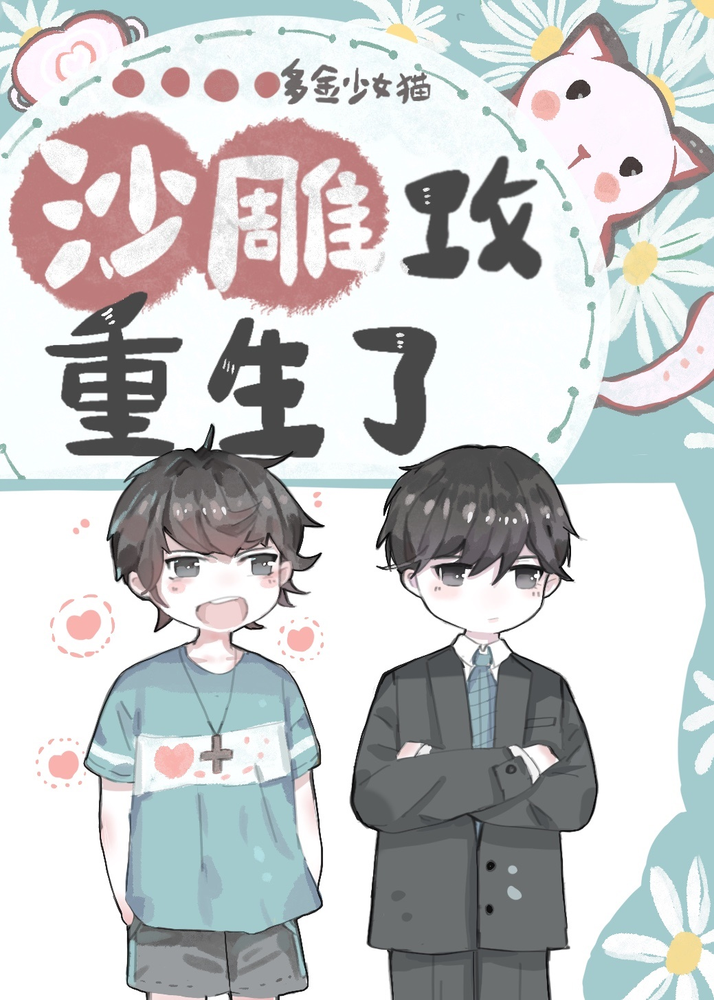

Todos los forasteros afirman que Xie Zhongxing se ganó la lotería al casarse con Qin Zhongyue, el príncipe de la Empresa Qin, e incluso fue apreciada y favorecida durante cinco años. Eran reconocidos como una pareja amorosa.
Sin embargo, no sabían que Qin Zhongyue estaba muy insatisfecho con este matrimonio. Se quejó con su buen amigo: "Lo controla todo al detalle. No me deja beber ni fumar, no me deja ir a discotecas, ¡e incluso me puso un toque de queda a las 10 de la noche!".
¡Tengo que entregarle todo mi sueldo y mis tarjetas bancarias, y solo me daría cien yuanes al día! ¡Solo si está de buen humor, me daría unos cientos más!
Qin Zhongyue se sintió enojada y agraviada: "¡Y yo también tengo que atenderlo!"
"¡Si vuelvo a tener la oportunidad, jamás me casaré con él! ¡Antes ganaba ocho millones de yuanes al mes para gastar!", le dijo el príncipe a su amigo.
Al día siguiente de decir esto, Qin Zhongyue se encontró renaciendo a la época en que tenía diecisiete años.
Xie Zhongxing, por aquel entonces, tenía dieciocho años y era tan pobre que solo tenía un conjunto de ropa vieja, calcetines rotos y un par de zapatos sucios con las suelas descascaradas. Aunque tenía un rostro atractivo, era despreciado y menospreciado, y en la escuela lo consideraban un pobre.
Cuando los padres de Xie Zhongxing vinieron a manejar los procedimientos de retiro para él, Qin Zhongyue solo entonces descubrió que él era un tirano del estudio, clasificado primero en su grado, recibiendo becas todos los años, y que era una semilla con buenas perspectivas del cual la escuela tenía altas expectativas y no el 'abandono inútil de la escuela secundaria a quien no le gustaba estudiar y solo tiene dinero en sus ojos' como afirmó su hermano menor.
Qin Zhongyue no soportó ver esto. Abrazó a Xie Zhongxing, furioso, y le dijo: "¡Sigue estudiando! Nuestra familia Qin nunca ha tenido un alumno con las mejores calificaciones, ¡debes seguir estudiando!".
Xie Zhongxing alzó la vista y lo miró confundido. Su mirada parecía preguntar: "¿Quién eres?".
Qin Zhongyue pensó en la dictadura de Xie Zhongxing tras su matrimonio y se estremeció. Luego, con una expresión de rectitud, dijo: "¡Solo soy una persona bondadosa que no quiere revelar su nombre!".
Más tarde, Qin Zhongyue le preguntó tímidamente a Xie Zhongxing: "Si nos casamos, ¿puedes darme mil yuanes al día para gastar?".
Xie Zhongxing, "?"
Qin Zhongyue: "...Quinientos también está bien".